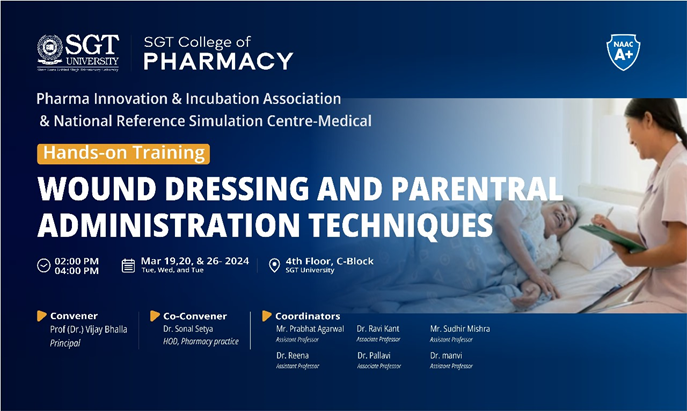
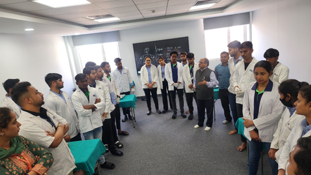
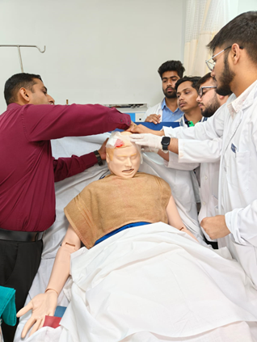
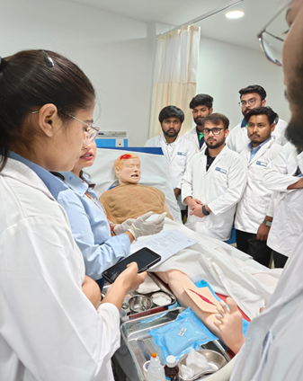
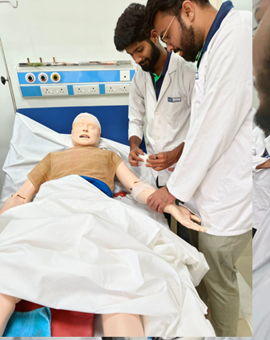
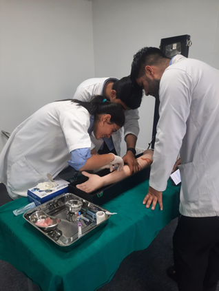
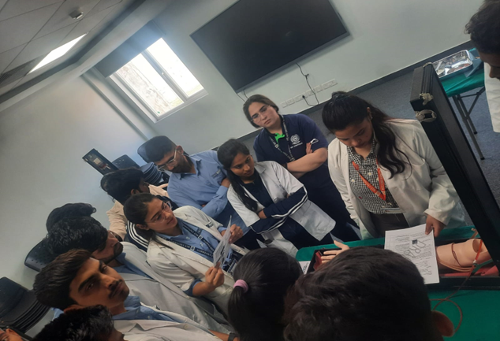
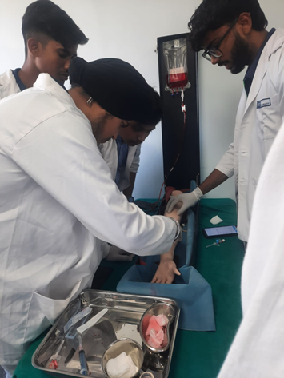
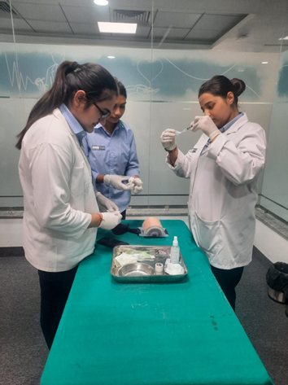
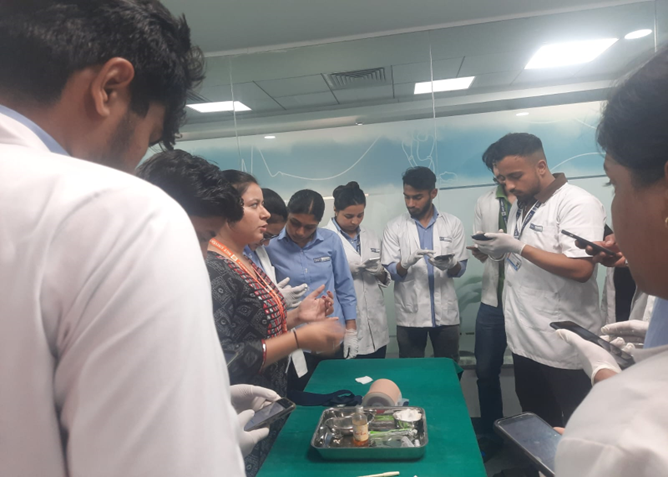

Hands-on-Training
“WOUND DRESSING AND PARENTERAL ADMINISTRATION TECHNIQUES”
E Brochure-

Organizers:
Name of the Demonstrator(s):
Dr. Sanjay Sharma (Faculty of SGT College of Pharmacy), Dr. Bhupendra (Faculty of Medical and Health Sciences), Dr. Ankita (Faculty of Dental Sciences), Ms. Jyoti and Ms. Ritu (Faculty of Nursing). All demonstrators are from SGT University, Gurugram.
Associations & NRSC-Medical:
Pharma Innovation & Incubation Association & National Reference Simulation Centre-Medical under the aegis of SGT College of Pharmacy, SGT University, Gurugram
Convener:
Prof. (Dr.) Vijay Bhalla, Dean, SGT College of Pharmacy
Co-Convener:
Prof. (Dr.) Sonal Setya, HOD, Pharmacy Practice, SGT College of Pharmacy
Coordinator(s):
Mr. Prabhat Agarwal, Dr. Ravi Kant, Dr. Manvi Singh, Dr. R. Pallavi, Mr. Sudhir Mishra and Dr. Reena, all faculties are from SGT College of Pharmacy.
Report of the Event
Introduction:
Pharma Innovation & Incubation Association & National Reference Simulation Centre-Medical Organized Hands-on-Training “WOUND DRESSING AND PARENTERAL ADMINISTRATION TECHNIQUES” On 19th,20th and 26th March 2024 at NRSC Centre-Medical, 4th Floor C block, SGT University, Gurugram. Timings were from 2 PM to 4 PM on each day of event.
Objective of the Workshop:
The aim of this event is to familiarize and to give exposure to students by giving them hands on training about wound dressing and various parenteral administration techniques plus to gain practical knowledge on real basis, at the same time unlocking their potential and becoming socializing with the various techniques on wound dressing and parenteral administration techniques.
Brief content of event:
This event was divided into 3 sessions on various techniques on IV, IM, SC, ID and wound dressing. This event was curated for emphasizing the students to understand the duties of the clinical pharmacists. Focus was put on how to select the right material for particular mode of techniques and their application. Students were also sensitized about patient compliance while performing techniques. Responsibilities beyond dispensing and order- processing activities were explained while involving them to choose the various types surgical aids and their disposal. Students were also trained on how to select various injecting needles (according to their gauge and length) and withdrawing medication from ampoules. Students had also gained knowledge about selection of different sites for administering medication according to different routes of administration in human mannequins.
The students of all streams of pharmacy college and few faculty members attended event with full zeal and enthusiasm.
Photos of the Event









List of Participants
Sr. No. Registration No. Name of Student Course
1 231412001 Menka M.Pharm I year
2 231416007 Neha Pharm. D 4 year
3 221427049 Nidhi D. Pharm 2 year
4 221427044 Shivani D. Pharm 2 year
5 221427013 Muskaan Jha D. Pharm 2 year
6 221427036 Chandan Gupta D. Pharm 2 year
7 221427030 Swyam Gupta D. Pharm 2 year
8 221427051 Tanish D. Pharm 2 year
9 221427054 Gulshan Verma D. Pharm 2 year
10 211427044 Rashmi D. Pharm 2 year
11 221426080 Prince B. Pharm 2 year
12 221426087 Uttam B. Pharm 2 year
13 221426025 Shivam B. Pharm 2 year
14 221427047 Bhupendra D. Pharm 2 year
15 221427001 Anish Mandal D. Pharm 2 year
16 221427002 Hitendra Nigam D. Pharm 2 year
17 221427007 Chandan Dubey D. Pharm 2 year
18 221427027 Anurag Dudi D. Pharm 2 year
19 221427031 Yaman D. Pharm 2 year
20 221427020 Parveen D. Pharm 2 year
21 201411008 Navan Pharm. D 4 year
22 221427005 Harsh D. Pharm 2 year
23 221427056 Rishabh D. Pharm 2 year
24 221427024 Sahil D. Pharm 2 year
25 221427034 Anish Mandal D. Pharm 2 year
26 221427046 Jasman D. Pharm 2 year
27 221427014 Dhiraj D. Pharm 2 year
28 221427012 Surendra D. Pharm 2 year
29 221427003 Abdul D. Pharm 2 year
30 221427043 Gaurav D. Pharm 2 year
31 221427018 Shubham D. Pharm 2 year
32 221427037 Birendra D. Pharm 2 year
33 221427042 Uday Mali B. Pharm 2 year
34 211426086 Vidhushi B. Pharm 3 year
35 211426099 Rajkumari B. Pharm 3 year
36 211426053 Anjali B. Pharm 3 year
37 211426096 Vineet Shukha B. Pharm 3 year
38 211426088 Dhruv B. Pharm 3 year
39 221427006 Himanshu D. Pharm 2 year
40 231416003 Kashish Pharm. D 4 year
41 231416004 Mark Pharm. D 4 year
42 231416013 Hardik Ahuja Pharm. D 4 year
43 231412003 Lakshay M.Pharm I year
44 231416006 Vishnu Pharm. D 4 year
45 201411001 Garvit Pharm. D 4 year
46 201411001 Hardik Arora Pharm. D 4 year
47 221427026 Shahzad D. Pharm 2 year
48 221406010 Mansi M.Pharm II year
49 221406015 Khushi M.Pharm II year